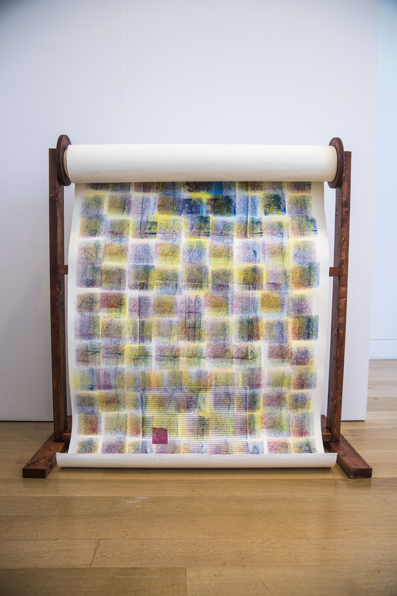
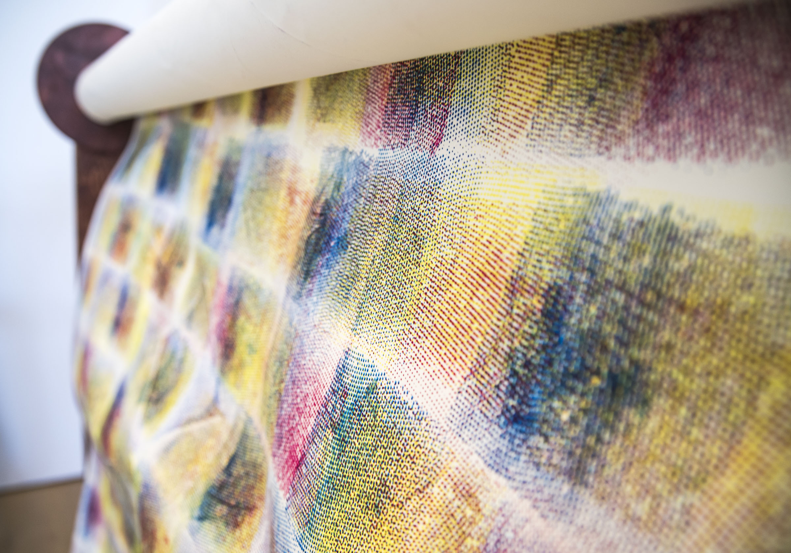
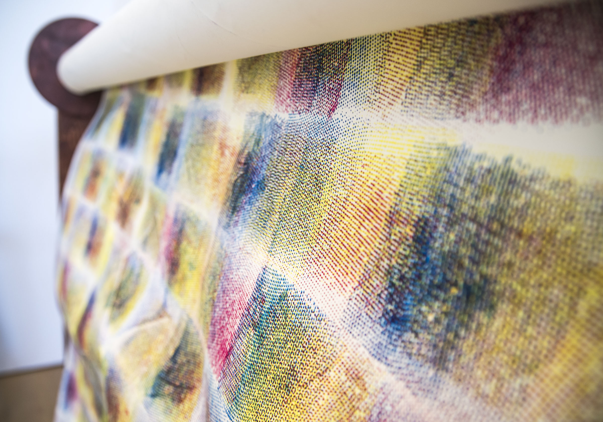
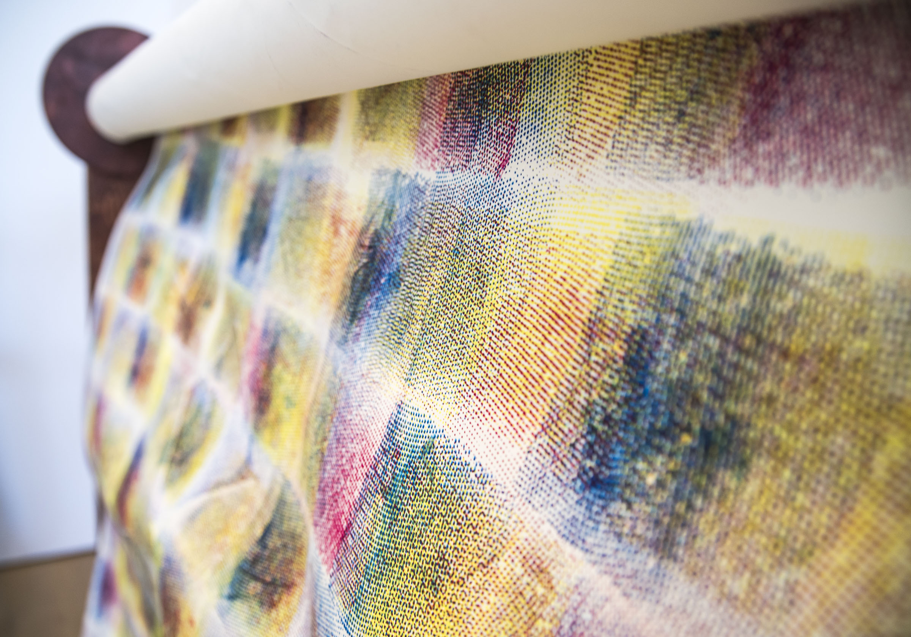

maya sato
Portfolio
About
Resume
CV


Separations
, 4'x30,' embroidery fabric, waterbase ink, and glue on archival drawing paper. Wooden paper roll stand.

 
Separations, 4'x30,' embroidery fabric, waterbase ink, and glue on archival drawing paper. Wooden paper roll stand.

Separations, 4'x30,' embroidery fabric, waterbase ink, and glue on archival drawing paper. Wooden paper roll stand.